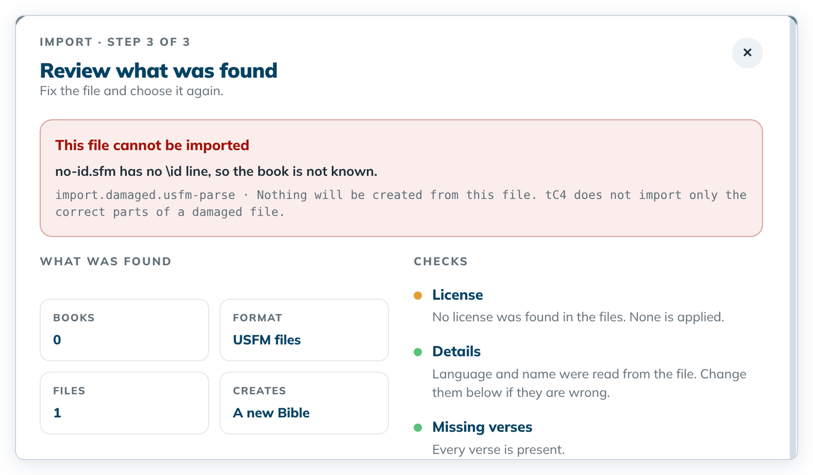
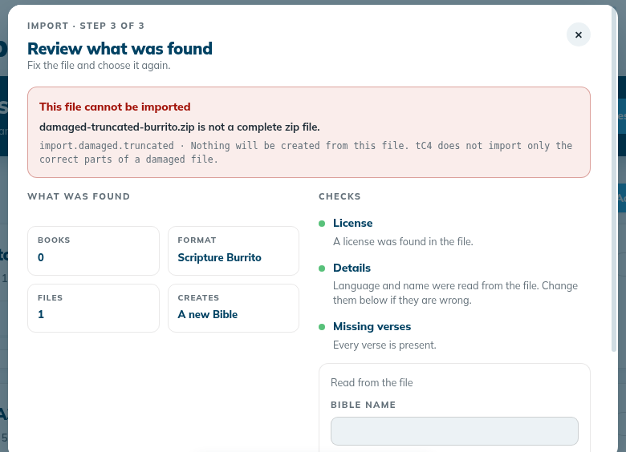

Help › Troubleshooting and known limits
Messages that protect your project
When tC4 finds something unexpected, it stops rather than risk your work, and tells you what to do. Damaged import files are refused with a reason and a code, and nothing is created.
Where in the app: Shown as a warning when you open, save, import or export
What it is
tC4 checks your project files before it writes, and checks files you import before it creates anything. If something does not match, it refuses and explains. It never imports only part of a damaged file.
When you open, save or export
| Message starts with | What it means | What to do |
|---|---|---|
| "A file changed outside the app." | Another program changed a project file. | Open the project again; tC4 fixes changed book files or names the ones it cannot fix. |
| "A story file was changed outside the app." | A story file was edited outside tC4. | Undo the outside change, then open the project again. |
| "This computer's change folder holds another computer's changes." | A project folder was copied by hand. | Ask for help. Use export and import to move projects. |
| "… has no drafted verse yet, so the PDF has nothing to print. Draft at least one verse of this book, then export the PDF again." | Nothing to print in this book. | Draft at least one verse, then export again. |
| "The app could not print the PDF…" | The PDF could not be made. The project did not change. | Close the app, open it again, and export again. For stories, try with Pictures off. |
| "The app stopped to protect your project. This is a problem in the app." | An internal check failed. | Ask for help. |
When you import
A damaged file shows a red box on the review step, This file cannot be imported, with the reason and a code. The code line ends "Nothing will be created from this file. tC4 does not import only the correct parts of a damaged file." The subtitle says "Fix the file and choose it again."
| Code | Example reason | What to do |
|---|---|---|
import.damaged.usfm-parse | "no-id.sfm has no \id line, so the book is not known." Also: a file that is not UTF-8 text, two files for the same book, or a marker with no end marker. | Fix the USFM file in a text editor (for example, add \id TIT as the first line), then choose it again. |
import.damaged.truncated | "damaged-truncated-burrito.zip is not a complete zip file." | The zip was cut off (for example, an unfinished download or copy). Export or copy it again. |
import.damaged.no-manifest | "… has no manifest.json, so it is not a translationCore 3 project." | Choose the zip that translationCore 3 (tC3) exported. |
import.damaged.corrupt-entry | "… is damaged: the file … in it does not match its checksum, so it cannot be read." | Export the project from translationCore 3 again. |
import.name-exists | "A project with this name is already on this computer. Change the Bible name, then import again." | Type another Bible name on the review. |
import.write-failed | "The partly written Bible was removed, so nothing was added to this computer. Your files are unchanged." | Try again. If it happens again, ask for help. |
Step by step
- Read the message. It always says whether your work is saved, or that nothing was created.
- Follow its advice. For a damaged import file, click ← Choose other files to pick a good file, or Cancel to stop.
- If it says "Ask for help", contact your support person and keep the project folder as it is.
What you should see
- A damaged import file shows a red box "This file cannot be imported", the reason, and a code line that starts with import.damaged. The subtitle reads "Fix the file and choose it again."
- Import as a new Bible stays greyed. Only ← Choose other files and Cancel lead on. No project card and no project folder is created.
- A book with nothing drafted is refused for PDF with "… has no drafted verse yet, so the PDF has nothing to print. Draft at least one verse of this book, then export the PDF again."
Screenshots

img/ts-protect-messages-1.png
img/ts-protect-messages-2.pngTips
- Most of these messages say "Your work is saved", "Nothing was overwritten" or "Nothing will be created from this file."
- The code (for example
import.damaged.truncated) helps your support person. Write it down or take a screenshot when you ask for help. - After a refused import, Home has no new card and no new project folder.
- Known issue: Under a red "This file cannot be imported" box, the Checks column can still show a green Details row ("Language and name were read from the file…") and "Every verse is present.", with BOOKS 0. Trust the red box: the file cannot be imported.
- Known issue: On one run the round ✕ of the import dialog did not respond after a refused burrito. Press Esc to close the dialog.
Known limits
- Their wording comes from the app.